Было про специи, стало про производство
Старый сайт встречал фотографией специй и золотым логотипом. Технологу мясокомбината из него не было понятно, что компания делает и чем подтверждает качество.
Новый первый экран отвечает на это сразу: что производим, для кого, с какого года и по каким стандартам. Рядом кнопка запроса образцов.
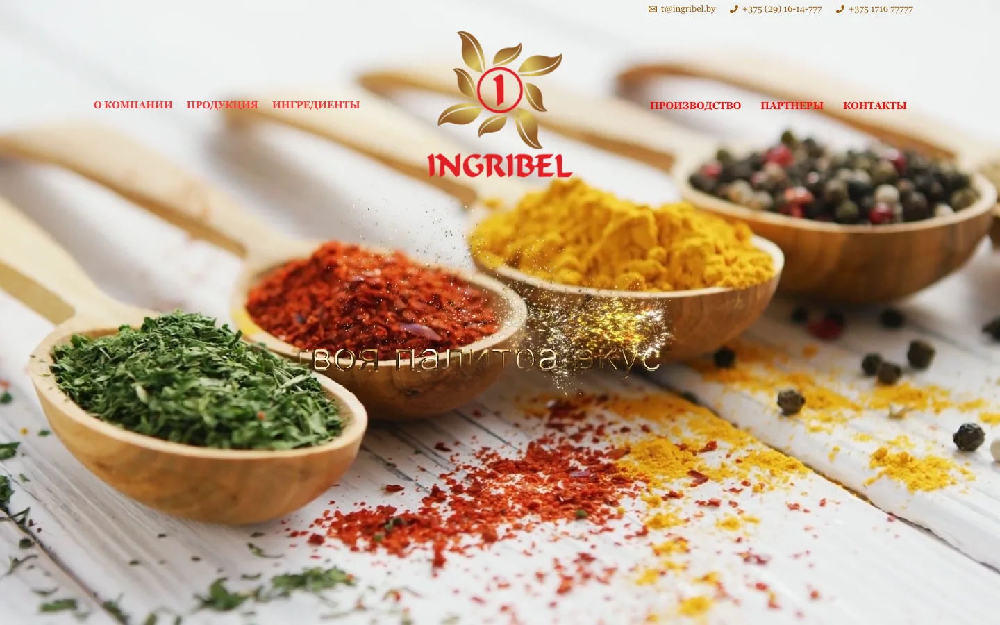
Каталог, линейки и производство
Продукция собрана по группам изделий: варёные колбасы, сырокопчёные, полуфабрикаты. Так технолог ищет добавку под свой продукт.
Линейки ИНГРИ идут списком с короткой расшифровкой. Производство показано реальными фотографиями цеха и этапами контроля партии.
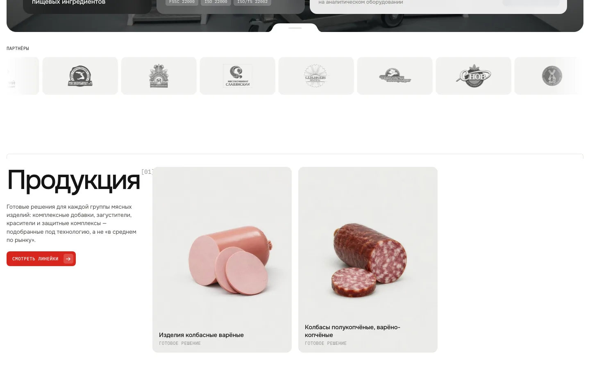
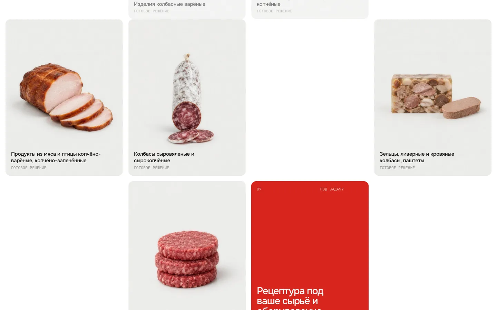
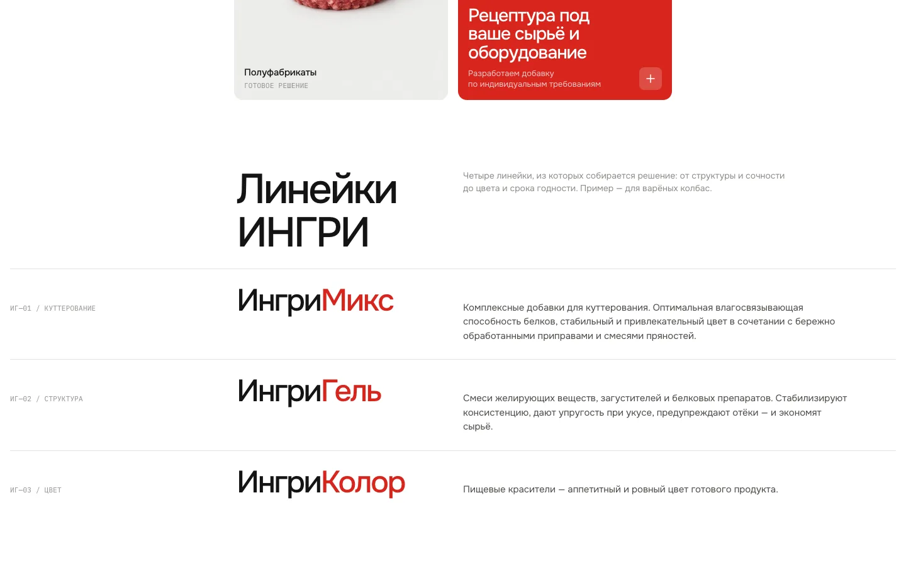
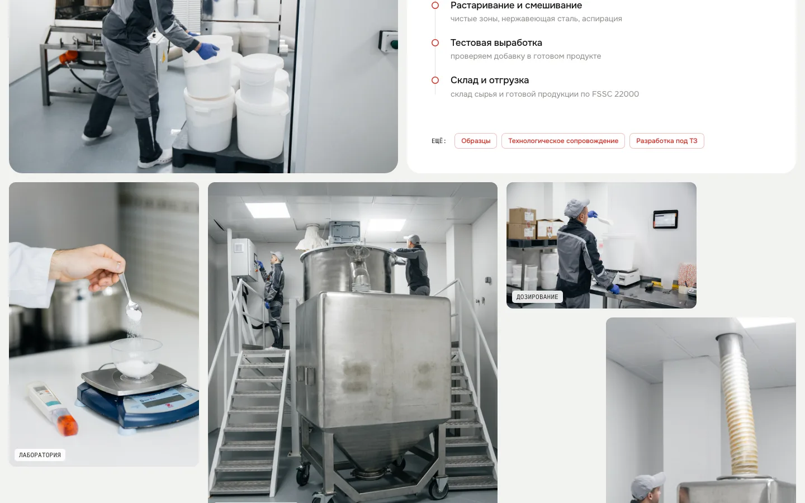
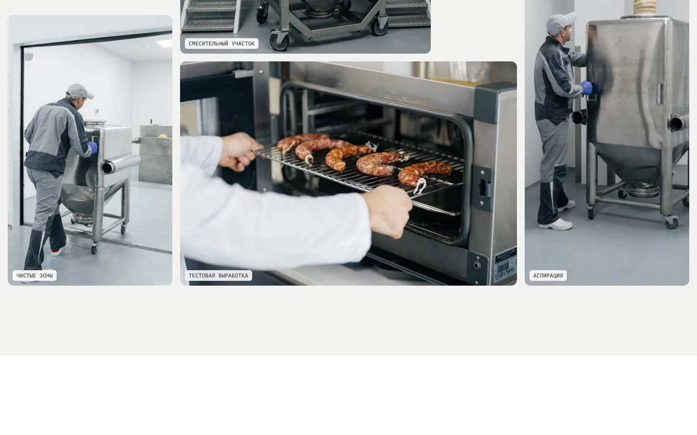
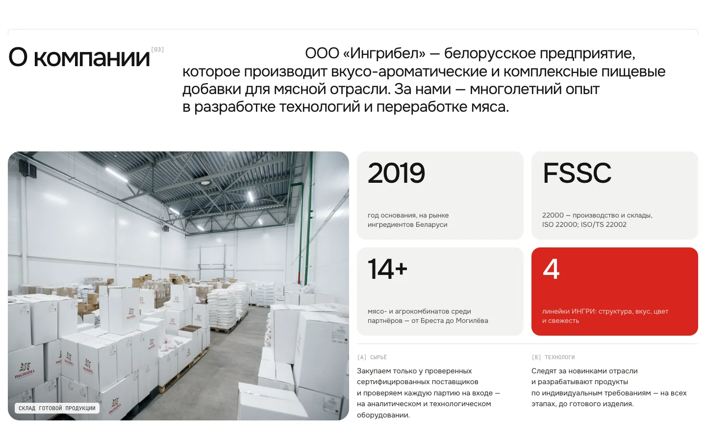
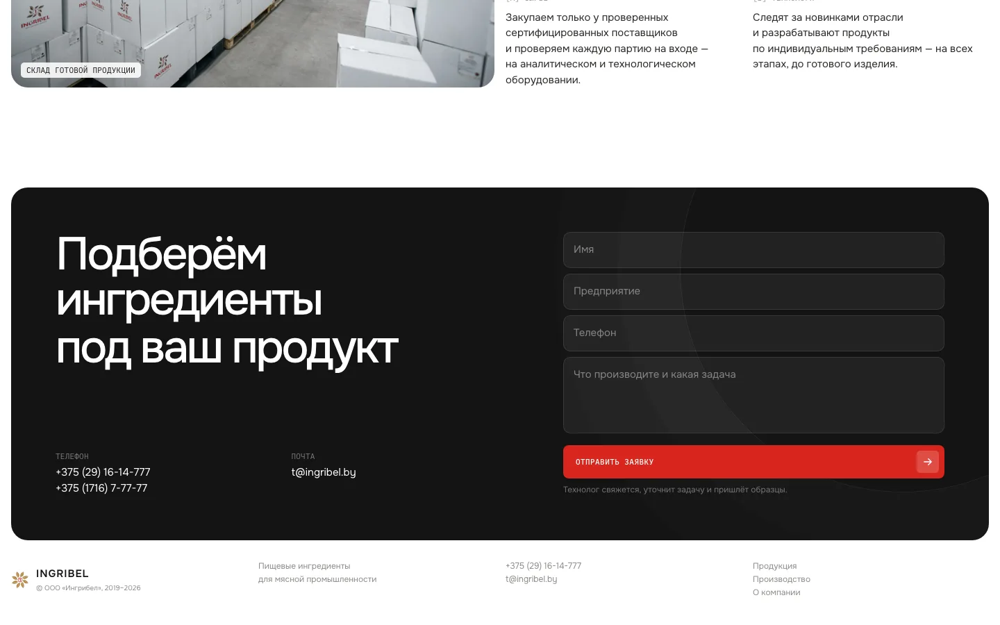
Те же блоки под телефон
Первый экран, каталог и форма пересобраны под узкий экран, а не просто сжаты. Карточки идут в одну колонку, кнопка заявки всегда под рукой.
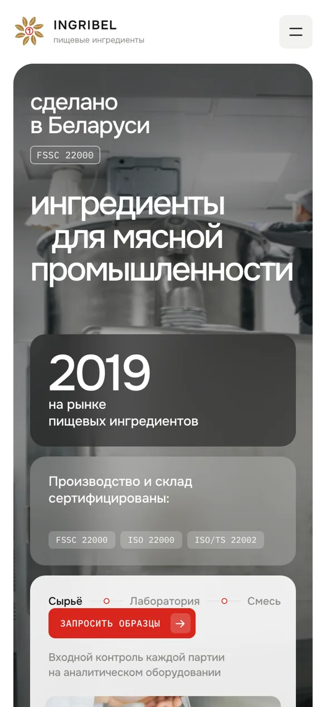
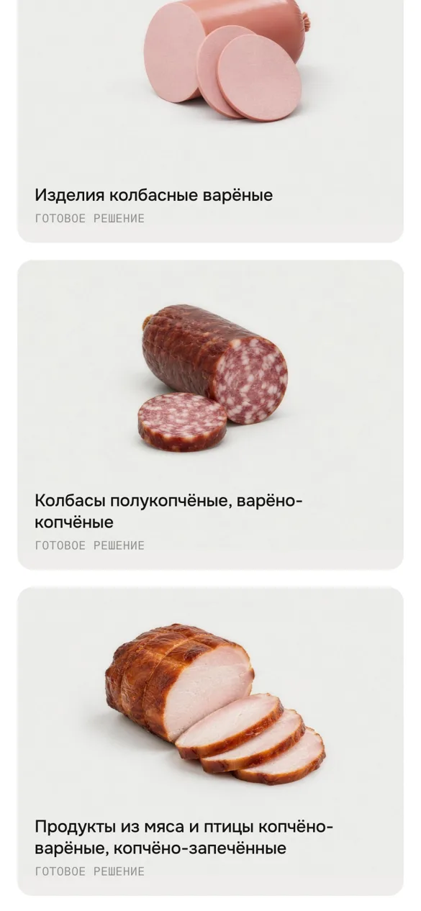
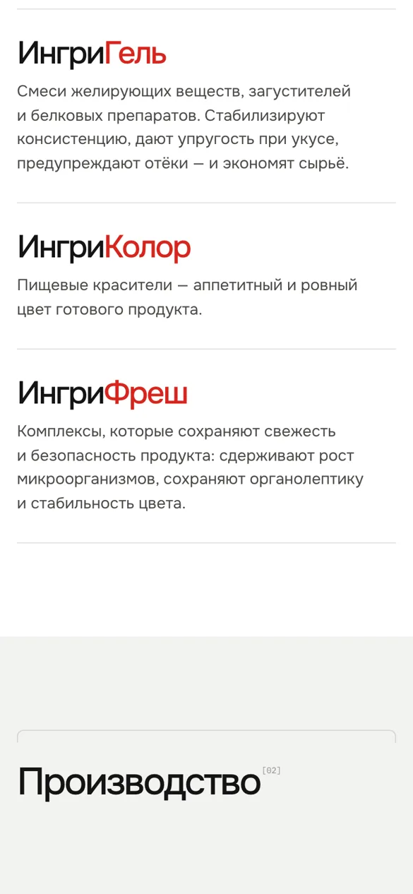
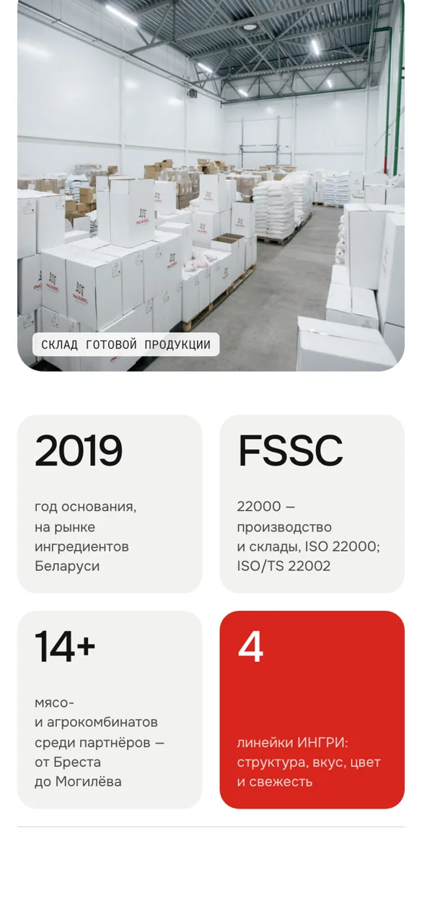
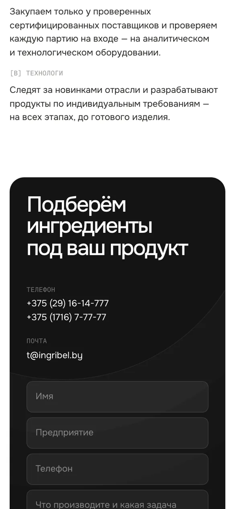
Спокойный стиль для промышленного B2B
Знак упрощён до плоского цветка, чтобы читался в шапке и в иконке вкладки. К нему собраны горизонтальная, вертикальная и одноцветная версии.
Палитра: белый, графит и один красный акцент. Заголовки набраны Onest, подписи и метки моноширинным IBM Plex Mono, как на маркировке.